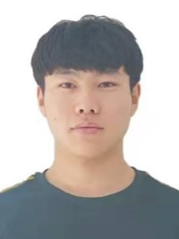
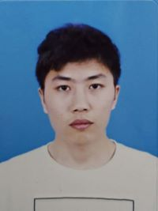
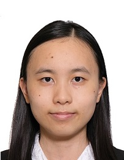

Group members
Luoma Wan (宛罗马)
Postdoc (2021-)
Email: luoma.wan@polyu.edu.hk
I received the B.Sc. degree in computer science and technology from Wuhan Institute of Technology, Wuhan, China, in 2012, the M.Sc. degree in software engineering from South China Normal University, Guangzhou, China, in 2015, and the Ph.D. degree in earth system and geoinformation science at the Chinese University of Hong Kong, Hong Kong, in 2021. I am currently a Postdoc in Pride lab. My research interests include mangrove forests monitoring with remote sensing and deep learning.
Fei Xu (许飞)
Postdoc (2022-)
Email: xufeibnu@gmail.com
Fei Xu received his B.S. and M.S. degrees from Nanjing University of Information Science and Technology and Beijing Normal University. After completing his doctorate in Bioscience Engineering at KU Leuven in 2021, he has been working as a Postdoc at Hong Kong Polytechnic University. He is engaged in data processing research to make remote sensing data more suitable for monitoring the urban environment. In particular, he focuses on the data fusion technique to obtain synthetic image data with the advantageous properties (e.g., high spatial/spectral/temporal resolution) of different remote sensing data sources.
Shuai Xu (徐帅)
PhD Student (2018-)
Email: shuai.xu@connect.polyu.hk
I received my B.S. in Geographical Information Science from Sun Yat-Sen University in June, 2018. Currently, I am a first year PhD student under the supervision of Dr. Xiaolin Zhu at the Department of Land Surveying and Geo-Informatics, the Hong Kong Polytechnic University. My research interest is to monitor and analyze the natural/urban environment through the application of the multi-source remote sensing data.
Xiaoyue Tan (谭晓悦)
PhD Student (2019-)
Email: xiaoyue.tan@connect.polyu.hk
I am a PhD student under the supervision of Dr. Xiaolin Zhu. My research interests are mainly focused on urban remote sensing, especially the data quality improvement and application of nighttime light remote sensing. Before commencing the PhD program, I received my Master’s Degree in Geography from Beijing Normal University in 2019, and my Bachelor’s Degree in Geographical Information System from China University of Mining and Technology in 2016 respectively.
Shuheng Zhao (赵书珩)
Postdoc (2021-)
Email: shuheng.zhao@connect.polyu.hk
I received my Bachelor Degree and Master Degree in Photogrammetry and Remote Sensing from Wuhan University in 2018 and 2021 respectively. Currently, I am a PhD student under Dr. Xiaolin Zhu supervision. My research interest is mainly focused on remote sensing imagery reconstruction.

Yan Wang (王岩)
PhD Student (2022-)
Email: daiki.wang@connect.polyu.hk
I received my Bachelor Degree in Geographic Information Science from Jilin University in 2018 and my Master Degree in Surveying and Mapping Engineering from Aerospace Information Research Institute, CAS in 2021 respectively. Currently, I am a PhD student under Dr. Xiaolin Zhu supervision. My research interests are mainly focused on monitoring terrestrial ecosystem using long time series satellite imagery.

Hengtian Zhang (张衡天)
Master Student (2020-)
Email: hengtian.zhang@connect.polyu.hk
I received my B.S. in Geographical Information Science from Sun Yat-Sen University in June, 2019. Currently, I am a Msc student under Dr. Xiaolin Zhu 's supervision. My research interests are mainly focused on remote sensing filed, such as ecological remote sensing and vegetation phenology of remote sensing.
Jiaru Ren (任佳儒)
Master Student (2021-)
Email: rooney.ren@connect.polyu.hk
I received my Bachelor's Degree in Geomatics from Tongji University in 2021. I am a MSc student under the supervision of Dr. Xiaolin Zhu. I major in Geographic Info Systems and my main research interests are in the areas of remote sensing, especially the monitoring of environment changes and human activities.
Zijia Wang (王紫佳)
Master Student (2021-)
Email: zijia.wang@connect.polyu.hk
I received my Bachelor's Degree in Environmental Science from the Beijing University of Civil Engineering and Architecture in July 2021. Currently, I am a first-year master's student under the supervision of Dr. Xiaolin Zhu at the Hong Kong Polytechnic University. My research interest center around developing a better understanding of the interaction between urban sprawl and eco-environment using multi-source satellite images and social sensing data.
Xiaoyue Jiang (蒋笑越)
Master Student (2021-)
Email: xiao-yue.jiang@connect.polyu.hk
I received my Bachelor's Degree in software engineering from Chongqing University in 2021. Currently, I am a master student under the supervision of Dr. Xiaolin Zhu. My main research interest is information extraction in the artificial interpretation of remote sensing images.
Chunxuan Zhang (张春璇)
Master Student (2021-)
Email: chunxuan.zhang@connect.polyu.hk
I received my Bachelor's Degree in Land Resource Management from Shandong Agricultural University in 2021. Currently, I am a master student under Dr. Xiaolin Zhu 's supervision at the Department of Land Surveying and Geo-Informatics. My research interests are mainly focused on geospatial analysis, especially the analysis of the spatial distribution of geospatial data.
Yi Nam Xu (許懿楠)
Undergraduate Research Assistant (2021-)
Email: 19054074d@connect.polyu.hk
I am an undergraduate student studying Land Surveying and Geo-Informatics at the Hong Kong Polytechnic University. Currently, I am a research assistant under the supervision of Dr. Xiaolin Zhu.

Ling Sum Hung (孔令琛)
Undergraduate Student Assistant (2022-)
Email: 19059031d@polyu.edu.hk
I am an undergraduate student studying Land Surveying and Geo-Informatics at the Hong Kong Polytechnic University. Currently, I am a student assistant under the supervision of Dr. Xiaolin Zhu.